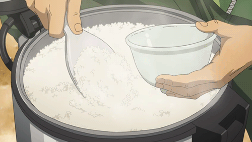

White Rice
the base of Dominican lunch menus, one of the components of La Bandera Dominicana, and the ultimate test of the good cook.
Ingredients
- 5 tablespoons vegetable oil, divided
- 2 teaspoons salt
- 4 cup rice
Steps
- Heating the water: In a medium aluminum pot heat 3 tablespoons of oil over medium heat, add the salt. When the oil is a little hot add 6 cups of water, taking care not to splash.
- Adding the rice: When the water reaches boiling point, add the rice and cook, stirring regularly to prevent it from sticking to the bottom.
- Covering the rice: When the water has evaporated, cover with the lid and cook over very low heat for 15 minutes. Remove the lid, stir, add the remaining oil and cover again. This oil will help the rice to shine, and the concón will be crispier.
- Serving: As soon as the rice is ready, remove it from the pot and place it in a serving dish. Scrape off the concón and serve on the side.